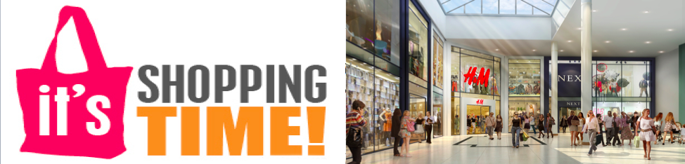
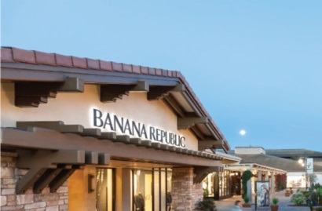
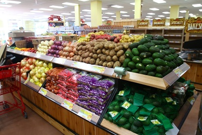
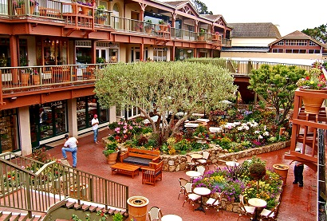

Shopping
- Del Monte Shopping Center
- 1410 Del Monte Center, Monterey, CA 93940
- (831) 373-2705 • www.delmontecenter.com
- Hours: Monday to Friday--10 am-9 pm; Saturday--10 am-7 pm; Sunday--11 am-5 pm. Anchor store, theatre, and restaurant hours vary.
- Del Monte Center is an open-air shopping center located in Monterey, California. Del Monte Center is the largest shopping center on the Monterey Peninsula and the second largest shopping mall in Monterey County, California, and has the only department store in a 22-mile radius.
-

- Trader Joe's
- 570 Munras Ave Monterey, CA 93940
- (831) 372-2010 • www.traderjoes.com
- Trader Joe's is an American privately held chain of specialty grocery stores headquartered in Monrovia, California, in Greater Los Angeles. As of 16 May 2014, Trader Joe's had a total of 418 stores.
- Approximately half of its stores are in California, with the heaviest concentration in Southern California, but the company also has locations in 38 other states and Washington, D.C. In downtown Monterey Trader Joe's, you can find all the daily grocery there, with decent quality and at reasonable price.
-

- Carmel Plaza
- Ocean Ave. & Mission Street, PO Box 4814, Carmel
- (831) 624-1385 • www.carmelplaza.com
- Hours: Monday to Saturday--10 am-6 pm; Sunday--11 am-5 pm.
- Carmel Plaza is the highlight of any trip to the Monterey Peninsula. This elegant, yet casual shopping & dining destination is an entertaining mix of internationally known brands and one of a kind discoveries.Some of the specialty shops include Anthropologie, Bottega Veneta, Khaki's of Carmel, Tiffany & Co., and Tommy Bahama.
-

Hi! Monterey — a city worth exploring
This website is designed for students or travellers who want to visit Monterey. It provides a general introduction about Monterey as well as guidelines and tips regarding shopping, eating and travelling here. We hope this website can help you explore Monterey with more fun!